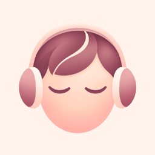

Koya
Hear your future, in your own voice.
Download on theApp StoreYour first story is free · iPhone
Your voicecloned
Every daynew stories
44languages

Hear your future, in your own voice.
Download on theApp StoreYour first story is free · iPhone